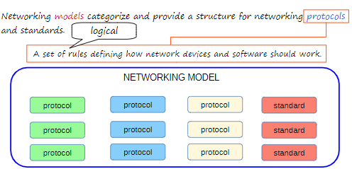

OSI Models & TCP/IP Suite
We will cover the OSI Model & the TCP-IP Suite, how they are used in the networking environment.
What is a networking model?

The different colours represent different categories of protocols & standards
The different categories of protocols & standards help define things like the structure & usage of IP addresses, and physical details like electrical voltage when used on copper cables when transmitting data.
If we had no protocols & standards, different devices (like Dell & Apple) would not be able to communicate with each other - only devices from the same manufacturer. It is the protocols & standards that allow commuction between devices on different networks.
OSI Model
Is used to standardise network communications. Although it is not in used today, networking engineers refer to the model today. The OSI Model is broken down into 7 layers of protocols & standards.
7 Layers of the OSI Model

When we send data, it passes through the application (Layer 7) then works its way down to the physical layer (Layer 1); for the end host recieveing the data it passes through the physical layer (Layer 1) then works it's way up to the application layer (Layer 7).
Application Layer

Application definition
The application layer interacts with software applications that has a communication component like a web browser. Layer 7 only focuses on the protocols to interact with the application, not the application itself.
When we send data, as the data passes through the layers, each layer adds some information to the data. By the time the raw data is sent through Layer 1 it is encapsulated with data from the rest of the layers. This is encapsulation. By the time the data is sent through Layer 1 it is sent through as electrical signals on a wire.

When the data passes to the machine recieving it, it enters Layer 1 as electrical signals and the data is de-encapsulated by the time it reaches the reciever's application (Layer 7). De-ecnapsulation is the opposite process of encapsulatoin, where it strips off data at each layer before reaching its final destination.
This communication between the two different application layers is known as same-layer injection. This allows the application to perform its functions described in the Application definition image.
Presentation Layer

Presentation definition
The presentation layer translates the data to the appropiate format for the end host to understand.
Session Layer

Session definition
The session management allows platforms to accomondate for continuous traffic (loads of people using their platform).
Top Three Layers

Data being sent to the bottom 4 layers
Data at the top 3 layers is sent to the lower 4 layers. The bottom 4 layers actually do the work of the network. As part of the encapsualtion, when the data is recieved at the transport layer (Layer 4), a header is attached before sending the data to the next layer down.
Transport Layer

Transport definition
If data being sent is in one big unit, if an error occurs, then the end host would not recieve the message, video, page, etc. But if the data is transported into segments, then if there is an error, it will only be applied to that segment - meaning the rest of the data could be sent & recieved. Host-to-host is also known as end-to-end communication; Layer 4 also provides process-to-process communication for applications.
Segments

When Layer 4 receives the data, it attaches a header to the data, this is called a segment. The segment is then sent to the network layer (Layer 3).
Network Layer

Network definition
Often there are many paths to navigate around a network, Layer 3 provides the best path selection - think of it as Waze or Google Maps of the OSI Model! When Layer 3 recieves the segment, the network layer attaches a header to the segment. This is called a packet; the packet is then sent to the data link layer (Layer 2).
Packets

Data Link

Data link definition
In Layer 2, switches look at the destination layer 2 address to determine where to send the data. When the packet is recieved in layer 2, the data link attaches a header and a trailer to the packet - this is called a frame. The frame is then sent to the physical layer (Layer 1).
Frame

Physical Layer

Physical definition

Once the frame is recieved by the client, the client's machine will de-encapsulate the data at each layer to view the data.
OSI Model - PDUs

Acronymns for the OSI Model

Use these acronyms to rember the OSI Model
TCP-IP Suite

TCP-IP Suite definition
It's very important that you learn and understand the OSI Model because it is refered to even when using the TCP-IP model.
OSI vs TCP-IP

Comparisons between the two models
If you are working on a TCP-IP model and someone refers to a layer, they are referencing a OSI Model layer.
Same model with different names

You may come across another model which is structured differently

Connection between two end hosts with their own routers. Host A is the server while Host B is the client.
When Host A sends data to Host B, it goes through the encapsulation process as the data travels down to the link layer. Connection to the internet without WiFi means you would have to use an Ethernet cable; the router is referenced by the Ethernet symbol. The router will look for the layer 3 (transport) address within the packet so it knows where to send the data to. The router de-encapsulates the data to figure out where to send it via its transport address; only when that is done a frame is crerated to send to the client. This could be done by fiber-optics, satelite, etc, then the client will de-capsulate the data by doing the same process (reversed).
REMEMBER !!
- Network engineers only focus from the transport layer to the physical layer (Layers 4 - 1).